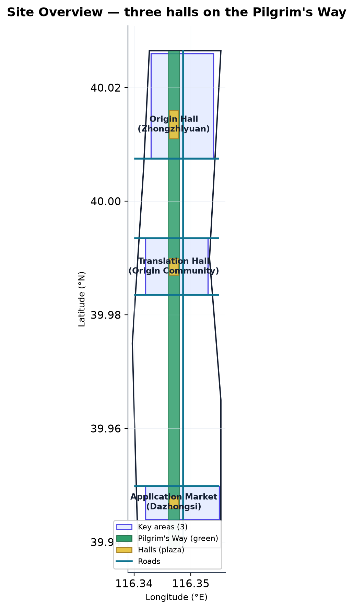
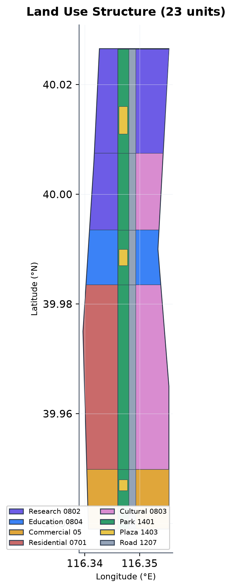
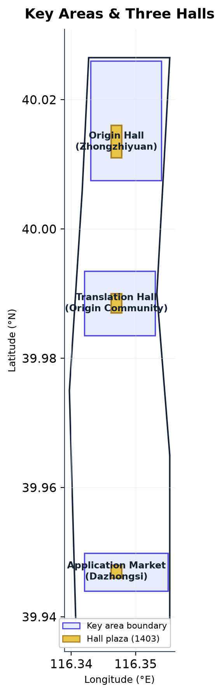
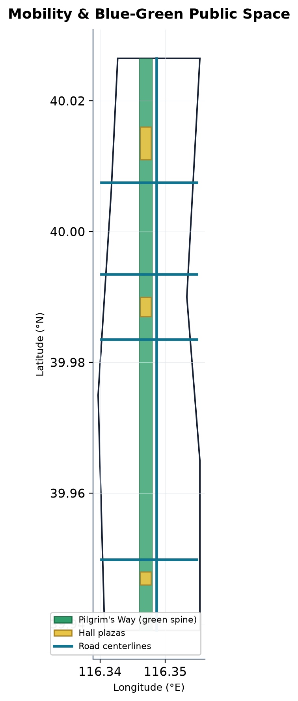
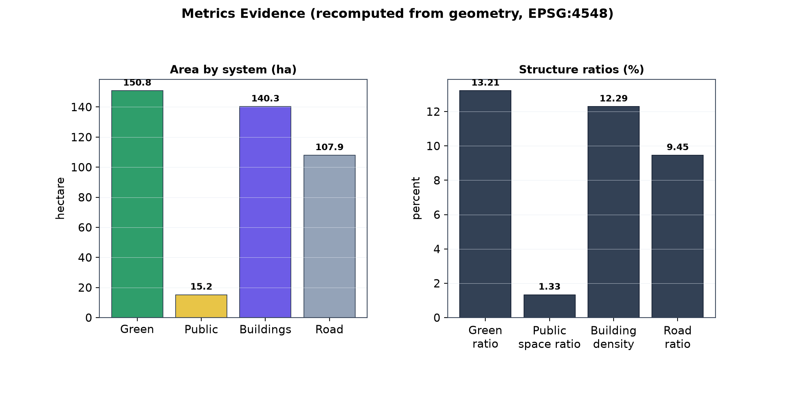

Jing-Zhang Pilgrimage Belt · 京张朝圣带
Reframing the Jing-Zhang Railway Heritage Park as a 'Pilgrim's Way', this proposal recasts the three key areas — Zhongzhiyuan, Beijing AI Origin Community, and Dazhongsi — into three AI landmarks: the Origin Hall, the Translation Hall, and the Application Market, woven together by an Inscription Belt honor system and a Pilgrim's Passport experience.
Jing-Zhang Pilgrimage Belt · 京张朝圣带
Design Basis and Data Inventory
This formal proposal takes the Haidian District announcement for the Centennial Jing-Zhang AI Innovation Belt international urban design open call as its primary basis, with the machine-readable provisional boundaries, key areas, enums, metrics, and source inventory under brief/site-package/ as the data basis Source Source. Every design judgment is decomposed into traceable sources, recomputable metrics, verifiable layers, and human-reviewable assumptions; prose never substitutes for GeoJSON, metric tables, A3 booklets, A0 boards, and HTML displays.
The proposal is organized from the announcement, the agent taskbook, and site materials, with the most critical evidence placed beside each claim Source Depth. The source registry distinguishes formal-ready from provisional-only material, and the agent must not upgrade background-only or provisional-only material into official redlines, statutory controls, scoring evidence, or implementation commitments Source.
This submission is generated from the provisional boundaries in brief/site-package/geometry/provisional_boundaries.geojson; geometry/site_boundary.geojson and geometry/key_areas.geojson are marked provisional_constraint, official_boundary=false, and may only be used for generation, self-check, visualization, and discussion — never as official redline, approval basis, precise area basis, or statutory conclusion Spatial data Metric. This data gap does not block content scoring; replacing the official polygons requires recomputing all layers and metrics.

Design Concept: Three Halls, One Way, One Inscription Belt, One Passport
The proposal translates the abstract arc of AI innovation into a walkable "pilgrimage". The Jing-Zhang Railway Heritage Park runs north–south through the three core areas and forms a natural linear public-space spine; the proposal names it the Pilgrim's Way and recasts the three key areas as three landmark halls for distinct innovation stages Source Depth:
- Origin Hall · Zhongzhiyuan — where AI innovation goes "from 0 to 1", corresponding to national AI platforms, full-stack autonomy, and safety governance Spatial data Spatial data.
- Translation Hall · Beijing AI Origin Community — where research is "translated" into products and community, corresponding to near-campus commercialization, open-source collaboration, and talent zones Spatial data Spatial data.
- Application Market · Dazhongsi — the marketplace where AI "enters everyday life", corresponding to agents, smart devices, content consumption, and data elements Spatial data Spatial data.
The three halls are connected by a north–south green skeleton. This Pilgrim's Way is drawn as park green space (code 1401), roughly 9.7 km long, forming about 150.8 ha of continuous blue-green public space Spatial data Metric. Along it runs the Inscription Belt — a contribution and honor display system for developers, enterprises, universities, and residents — together with the Pilgrim's Passport — a lightweight check-in and recognition experience supported by AI wayfinding and walkability assessment Depth. The three landmark plazas total about 15.2 ha and form the spatial climax and public-activity anchors of the belt Spatial data Metric.
This concept adds no new redline; it translates the three-tier scope and the brief's call for a recognizable "Centennial Jing-Zhang Cultural Belt, Urban AI Experience Belt, and AI Fusion Innovation Belt" into a start-to-finish, ceremonial, operable public-space narrative Standard.
Naming System, Visual Identity, and Logo Direction
The naming system is built around "pilgrimage" as a walkable, communicable, operable public metaphor, turning the abstract stages of AI innovation into a concrete spatial sequence Source Depth. Four principles govern it: respect the historical texture of the Jing-Zhang Railway without fabricating history; translate the innovation arc from sourcing to application into spatial language; remain extensible for walking and dissemination; and never copy city, park, or enterprise names Standard.
| Naming tier | Name | Meaning and location | Evidence |
|---|---|---|---|
| Belt name | Jing-Zhang Pilgrimage Belt | An AI public-space narrative belt built on the Jing-Zhang Railway Heritage Park as the "Pilgrim's Way" | Spatial data |
| Three landmarks | Origin Hall / Translation Hall / Application Market | Zhongzhiyuan "from 0 to 1", Origin Community "research to product", Dazhongsi "AI into everyday life" | Spatial data |
| Spatial spine | Pilgrim's Way | The north–south Jing-Zhang heritage-park green skeleton | Spatial data |
| Honor system | Inscription Belt | Contribution and honor display for developers, enterprises, universities, residents | Depth |
| Experience system | Pilgrim's Passport | Lightweight check-in, recognition, and walkability assessment | Spatial data |
Logo direction (conceptual suggestion for professional deepening). The primary mark takes "two railway rails" as its base and "three ascending nodes" as its core: two parallel lines represent the Jing-Zhang rails and the heritage park's linear public space; three ascending nodes represent the Origin Hall, Translation Hall, and Application Market; a path rising from lower-left to upper-right connects them, symbolizing the progression "from sourcing to application" Depth. The palette is threefold: Jing-Zhang rail green (#2F6E4F, heritage and greenery), AI indigo (#4F46E5, compute and algorithms), and pilgrimage gold (#C9A227, honor and ritual). The mark extends into three hall sub-marks, an Inscription Belt badge, and a Pilgrim's Passport seal; the typographic direction suggests a system sans-serif for Chinese headings and a sans-serif for English, with font licensing cleared before official release Source. The identity concept is inlined as a self-drawn geometric SVG in visual/index.html, using no external trademark, portrait, or unlicensed font.
Three-Zone, Two-Wing Synergy Loop
The proposal organizes a synergy loop across the existing "three zones, two wings" pattern, connecting the three key areas and two functional wings into a circulating innovation loop Source Depth.
| Unit | Positioning | Five-function mapping | Synergy role |
|---|---|---|---|
| Zhongzhiyuan AI Autonomous Innovation Acceleration Area | Origin Hall | Full-stack autonomous innovation system; AI governance global voice | Sourcing: autonomous models, standards, safety governance |
| Beijing AI Origin Community | Translation Hall | World-class AI innovation ecosystem | Translation: near-campus commercialization, open source, talent zone |
| Dazhongsi AI Industry Cluster | Application Market | Agent-native new business | Application: agents, devices, content consumption, data elements |
| Zhongguancun tech-service wing | Service wing | Global factor allocation | Lateral support: Zhongguancun IP, capital, professional services feeding the three areas |
| Xiaoyue River scenario wing | Scenario wing | AI+ scenario empowerment; intelligent vibrant city | Lateral feedback: living scenarios and public experience feeding product iteration |
The loop has a "main chain" and "two wings": the main chain is the south-to-north innovation flow "Zhongzhiyuan sourcing → Origin Community translation → Dazhongsi application", carried by the Pilgrim's Way green skeleton Spatial data; the two wings are the Zhongguancun tech-service wing empowering factor allocation and the Xiaoyue River scenario wing feeding scenario validation back, so that innovation "has compute for R&D, capital for conversion, scenarios for landing, and data for feedback" Depth. This loop is a conceptual spatial and mechanism suggestion, involving no specific investment, output, or fiscal commitment.
Regional Innovation Synergy
As one node of a "global AI industry highland and pilgrimage destination", the belt forms differentiated division of labor with existing innovation carriers across Haidian and the Beijing-Tianjin-Hebei region rather than homogeneous competition Source Depth. Synergy is organized in three layers — functional division, factor flow, and brand linkage: complementing the Beiwei Community, Future Science City, Huairou Science City, and the Economic-Technological Development Area in basic research, hard technology, manufacturing, and industrial capacity; coordinating with Beijing-Tianjin-Hebei on compute, data, talent, and industrial transfer; and serving internationally as the public entry point of the AI innovation narrative through the Jing-Zhang Pilgrimage Belt Depth. These are conceptual judgments and open suggestions; specific cooperation mechanisms, resource scale, and policy arrangements await formal planning and research and are not written as conclusions.
Three-Level Scope Framework
The proposal is organized across the three announced levels: the coordinated research scope covers roughly 43.6 km² of AI ecology and future urban form; the overall design scope covers roughly 11.4 km² around the heritage park; the key-area scope covers roughly 368.4 ha of detailed design Source Depth. All three levels are mapped item by item in compliance_matrix.json, so every mandatory task under 1.3, 1.4, 1.5, and agent.1–agent.6 has sections, layers, metrics, drawings, and HTML evidence.
The three levels are not separate drawing sets: coordinated research determines industrial and urban-form judgments, overall design converts those into renewal projects and spatial structure, and key-area detailed design verifies implementability Depth. Any area, ratio, scale, or project count that cannot be recomputed from structured data is not written as a formal conclusion.
| Level | Design question | Proposal answer | Data anchor |
|---|---|---|---|
| Coordinated research | How AI ecology and future urban form are organized | "University sourcing → open-source collaboration → enterprise commercialization → public experience → international dissemination" chain | compliance_matrix.json, standard_matrix.json |
| Overall design | How industrial space, renewal, transport and character are drawn | Pilgrim's Way green skeleton + Jing-Zhang Avenue + three halls + land/building/road layers | Spatial data, Spatial data |
| Key areas | How three districts reach detailed-design depth | Origin Hall / Translation Hall / Application Market with respective programs | Spatial data, Metric |

Coordinated Research Scope: Industrial and Future-Urban Studies
The core task of the coordinated research scope is to build a world-class AI innovation ecosystem. The proposal organizes Haidian's universities, leading enterprises, computing/algorithm/data elements, incubators, listed companies, and unicorns into a spatial chain of "university sourcing → open-source collaboration → enterprise commercialization → public experience → international dissemination" Source. The name "Jing-Zhang Pilgrimage Belt" directly serves the three identity goals: the Centennial Jing-Zhang Cultural Belt (railway heritage and pilgrimage narrative), the Urban AI Experience Belt (passport and public scenarios), and the AI Fusion Innovation Belt (three-hall industrial chain) Standard.
Future urban-form research addresses how AI changes work, life, socializing, learning, transport, and public services. The proposal places AI transport systems, continuous green space, innovation services, and an international atmosphere into locatable districts, nodes, and corridors Depth. Performance indicators such as AI innovation indices and talent density are uniformly marked as awaiting official calibration, never fabricated.
Global AI Innovation Ecosystem Case Studies
The proposal selects 8 publicly verifiable global AI innovation ecosystem cases from public research, extracting reusable mechanisms and spatial lessons for the belt Source Depth. The cases focus on six dimensions — university sourcing, factor allocation, urban renewal, public space, scenario landing, and governance voice — without fabricating enterprise lists, investment amounts, or output values.
| Case | Key mechanism | Lesson for the belt |
|---|---|---|
| Boston Kendall Square (around MIT), USA | University labs deeply coupled with high-density research-industry streets | The Origin Hall needs a "walkable innovation interface" with universities |
| Silicon Valley (Stanford / Palo Alto), USA | University-industry + venture capital + rapid iteration | The Translation Hall needs capital and professional services, not just physical space |
| Montreal Mila, Canada | A research institute clustering global AI talent into community stickiness | The Origin Community can borrow "research community + public space" talent retention |
| London King's Cross / Knowledge Quarter, UK | Urban renewal + technology + cultural public space composite | The Application Market can co-operate "agent-native consumption" with existing cultural landmarks |
| AI Campus Berlin, Germany | Carrying open AI community and events through public space | The Pilgrim's Way can be the offline container of an "open AI community" |
| Shenzhen Nanshan (Science Park / Huaqiangbei), China | Full-chain manufacturing + fast scenario landing | Agent-device scenarios need a test-and-feedback loop |
| Singapore one-north | Governance + industry-city integration + international-talent friendliness | International dissemination and talent services can borrow "livable + innovative" balance |
| Beijing Zhongguancun (benchmark) | University sourcing + tech-service clustering | The Zhongguancun tech-service wing is the local foundation for factor allocation |
The case lessons are all converted into "conceptual reference" rather than copied; any judgment involving specific enterprises, investment, or policy is marked as awaiting official calibration.
AI Innovation Ecosystem Map and Zhongguancun Tech-Service Wing
The proposal organizes the belt's AI innovation ecosystem as a "five layers, one ring" map Source Depth:
1. Sourcing layer — universities and national AI platforms (Origin Hall / Zhongzhiyuan) for basic research and full-stack autonomy Spatial data; 2. Translation layer — open-source communities, incubators, and near-campus commercialization (Translation Hall / Origin Community) Spatial data; 3. Application layer — leading enterprises, unicorns, and agent-native new business (Application Market / Dazhongsi) Spatial data; 4. Service layer — the Zhongguancun tech-service wing for global factor allocation, Zhongguancun IP, and capital; 5. Scenario layer — the Xiaoyue River scenario wing and the Pilgrim's Way public-experience path for scenario opening and feedback; 6. Ring — international communication and governance voice, exported through the Inscription Belt honor system and the Pilgrim's Passport.
Zhongzhiyuan full-stack autonomy focuses on the "compute–algorithm–data–framework–chip–governance" chain, spatially carried by the Origin Hall plaza for autonomous-model testing and standards-governance display Spatial data. Beijing AI Origin Community uses "campus–park–district" slow-mobility stitching to enable commercialization and talent retention Spatial data. Zhongguancun tech-service wing feeds the three areas back with specialized, globalized services rather than adding physical capacity Depth.
Element Guarantee Mechanisms (Land · Space · Industry · Capital · Talent · Compute · Data · Scenario)
The proposal offers "conceptual suggestion"-level guarantee mechanisms across eight elements, all stated as deepenable by professional teams and not as policy or fiscal commitments Source Depth.
| Element | Conceptual mechanism | Boundary |
|---|---|---|
| Land | Stock renewal + public-space priority, reusing the heritage park and existing parks first | No FAR, height, or retain-renovate-demolish conclusions |
| Space | Pilgrim's Way green skeleton + three halls + public-space component library | Spatial location follows GeoJSON layers |
| Industry | Full-stack autonomy + agent-native new business tiered cultivation | No fabricated enterprise lists or output values |
| Capital | Guide a diversified factor mix so "R&D has compute, conversion has capital" | No investment or fiscal commitment |
| Talent | Talent zone + international community + residency-oriented public space | No specific talent-policy quota |
| Compute | Edge-compute service points + distributed new infrastructure | No energy-load or municipal-capacity estimation |
| Data | Public and cleared data first; privacy and ethics boundaries built in | No non-public or personal-privacy data |
| Scenario | Scenario-opening mechanism + test scenarios + feedback loop | Test scenarios not written as approved operation |
Overall Design Scope: Renewal and Control-Plan-Depth Urban Design
The overall design scope reaches control-plan depth. The proposal sets a spatial structure of "one way, three halls, a blue-green slow-mobility composite": the Pilgrim's Way green skeleton as the longitudinal axis, Jing-Zhang Avenue as the service road, and three halls as public-space anchors Standard Depth. geometry/land_use.geojson covers the boundary with no overlap; geometry/buildings.geojson expresses building footprints; geometry/roads.geojson expresses micro-circulation and slow-mobility connections Spatial data Spatial data Spatial data.
Where official controls for height, intensity, road redlines, setbacks, and facility standards are missing, content is uniformly written as "pending official control-plan confirmation" rather than agent-inferred values Standard.
Key-Area Detailed Design (Three Halls)
Detailed design of the key areas is mandatory; the proposal locates the three halls respectively Depth:
| Key area | Hall | Spatial action | AI industrial and operational scenario | Evidence |
|---|---|---|---|---|
| Zhongzhiyuan AI Autonomous Innovation Acceleration Area | Origin Hall | Strengthen the Qing River interface, industrial display, and low-carbon exchange; carry autonomous-model testing and standards-governance display in the plaza | Autonomous model testing, standards workshops, safety governance display | Spatial data, Spatial data |
| Beijing AI Origin Community | Translation Hall | Stitch campus, park, and district slow mobility; carry achievement release, open-source collaboration, and talent services in the plaza | Open-source community, achievement release, near-campus incubation | Spatial data, Spatial data |
| Dazhongsi AI Industry Cluster | Application Market | Four-quadrant pedestrian connectivity around Dazhongsi station; carry agents, content consumption, and international roadshows in the plaza | Agent and device display, content consumption, data elements | Spatial data, Spatial data |
Each key area cites its layer evidence and is checked by design_depth_matrix.json for plan-implementation depth Metric.

AI Innovation Ecosystem, Personas, and AI+ Scenarios
The proposal builds spatial-demand personas for AI talent and enterprises, covering R&D offices, open-source collaboration, achievement release, enterprise services, talent housing, social learning, consumption, recreation, and international exchange. Each scenario states its users, location, data source, privacy boundary, human-review mechanism, and operating body Source.
| Persona | Core needs | Spatial response | Self-check boundary |
|---|---|---|---|
| Open-source developer | Release, collaborate, test, community reputation | Translation Hall release hall, public code wall, night collaboration space | No individual behavior tracking; activity data aggregated only |
| Startup team | Low-cost office, compute entry, product proving ground | Origin Hall shared test field, edge-compute service point, standards consultation | Compute and data services require separate authorization |
| Enterprise visitor | Display, business, international reception, recruitment | Application Market international lounge, station interchange, public space near enterprises | Enterprise marks and cases must be cleared |
| Resident | Commute, recreation, community services, low-disturbance renewal | Pilgrim's Way slow-mobility loop, embedded community services, night lighting and event grading | Resident personas not used for commercial recommendation |
| University member | Commercialization, cross-campus collaboration, daily slow mobility | Campus-park stitch, commercialization station, AI education experience point | Campus data and research require authorization |
AI scenarios land on spatial and governance boundaries: the passport references public space, walkability references roads, open space references green and metrics Spatial data Spatial data Metric.
AI Scenario Cards (10) and Test Validation Scenarios
The proposal provides 10 AI scenario cards under the standard of "experiencable, displayable, promotable, reviewable", each stating users, location, AI capability, data/privacy boundary, operating body, and human-review mechanism Source Depth.
| ID | Scenario | Users | Location | AI capability | Privacy / data boundary |
|---|---|---|---|---|---|
| SC-01 | AI pilgrimage guide (Passport) | Residents, visitors | Pilgrim's Way entire belt | Lightweight check-in, guide, walkability | No individual tracking; activity data aggregated |
| SC-02 | Open-source release hall | Open-source developers | Translation Hall | Release, collaboration, reputation | Code and attribution require authorization |
| SC-03 | Autonomous-model test field | Enterprises, research teams | Origin Hall | Model evaluation, standards display | Test data require authorization |
| SC-04 | Edge-device market | Public, developers | Application Market (Dazhongsi) | Agent and device experience | Device interconnection requires consent |
| SC-05 | AI education experience point | Students, youth | Origin Community / campus edge | Education, popularization, hands-on | Campus data require authorization |
| SC-06 | Slow-mobility safety assessment | Commuters, residents | Pilgrim's Way | Flow analysis, safety prompts | No individual identification |
| SC-07 | Public-art AI co-creation | Public, artists | Inscription Belt | Generative co-creation, curation | Work copyright requires clearing |
| SC-08 | International roadshow lounge | Global teams, enterprise visitors | Application Market | Remote collaboration, multilingual release | Enterprise marks require clearing |
| SC-09 | Blue-green ecological sensing | Residents, public | Qing River, Xiaoyue River | Ecological sensing, environment prompts | Public environment data only |
| SC-10 | Accessible elder-friendly AI companion | Seniors, mobility-impaired | Entire belt | Voice guide, companion prompts | No health-privacy collection |
Test validation scenarios (3) verify technical implementability and are stated as "test visions to be deepened by professional and technical teams", never written as approved operation Source:
| ID | Test scenario | Location | Validation goal | Boundary |
|---|---|---|---|---|
| TS-01 | Autonomous-model sandbox evaluation | Origin Hall | Model capability and safety governance reviewable | Test data and compute require separate authorization |
| TS-02 | Edge-device interoperability | Application Market | Multi-vendor device interoperability and experience loop | No specified supplier |
| TS-03 | AI public safety and governance | Entire belt public space | Safety, ethics, human-review mechanism | No excessive surveillance |
Scenario–space–operation mapping. Every scenario card maps to structured layers and an operating body so that "scenarios are locatable, operations are accountable, and outcomes are assessable" Depth: guide scenarios map to public-space and road layers Spatial data Spatial data; industry scenarios map to key-area and building layers Spatial data Spatial data; ecology and slow-mobility scenarios map to green and road layers Spatial data. Operating bodies are uniformly stated as a "public operator + professional service + technical party" tripartite structure, with specific bodies and authorization pending formal confirmation.
Land Use, Building Scale, and Retain-Renovate-Demolish
The land-use plan follows public land-survey, planning, and use-control classification standards to form a complete, closed, gapless partition Standard. The partition includes park green space (1401) for the Pilgrim's Way, road land (1207) for Jing-Zhang Avenue, research (0802), education (0804), commercial (05), residential (0701), cultural (0803), and plaza (1403) for the three halls — 23 units in total Spatial data.
The building plan distinguishes retain, renovate, renew, new-build, and to-confirm objects. The conceptual layout has 60 building footprints totaling about 140.3 ha Spatial data Metric. Because current buildings, ownership, control plans, and engineering conditions are missing, floor-area ratio, height, and density are recorded as status=unknown in metrics.json, never fabricated Depth.
Transport, Rail, Municipal, and Public Service Facilities
The transport plan responds to station integration, micro-circulation, slow-mobility gaps, external transport, parking, and bicycle parking Depth. The road centerline layer takes Jing-Zhang Avenue as the main line with four east-west stitching streets, all within the boundary Spatial data. Coverage includes Dazhongsi station, Qinghua East Road West, Wudaokou, and the heritage-park ring-road crossing.
Municipal and public-service facilities cover AI industry services, innovation platforms, talent services, new infrastructure, distributed energy, and edge compute Depth. Missing utility, energy, drainage, flood, and fire data are listed as preconditions for deepening, not approved conditions Spatial data.

Blue-Green Space, Public Space, and Urban Character (Way and Halls)
The blue-green plan takes the heritage-park vitality belt as its skeleton, coordinating the Qing River, Xiaoyue River, universities, enterprises, and community needs into a north-south continuous, east-west connected walking and cycling system Depth. The Pilgrim's Way comprises 5 park segments totaling about 150.8 ha, a green ratio of about 13.2% Spatial data Metric. The three hall plazas total about 15.2 ha, a public-space ratio of about 1.3% Spatial data Metric.
Urban character fuses railway heritage, Zhongguancun innovation culture, and AI innovation culture, drawing on Tsinghuayuan Station and BFA cultural resources for city tone, architectural character, roofline, and public art Standard. The Inscription Belt (contribution and honor display) and Pilgrim's Passport (wayfinding and recognition) form the bridge between character and operation; all brands, fonts, images, portraits, and enterprise marks require cleared sources.
Public-Space Component Library
To make the Pilgrim's Way and the three halls replicable, composable, and operable, the proposal establishes a "public-space component library", decomposing spatial elements into composable standard components Source Depth. All components are conceptual suggestions; engineering feasibility and specifications await professional deepening.
| Component | Function | Location | Operation / data boundary |
|---|---|---|---|
| Hall node plaza | Public-activity anchor of the three halls | Origin Hall / Translation Hall / Application Market | Spatial data |
| Inscription Belt plaque | Contribution and honor display | Along the Pilgrim's Way | Display content requires clearing |
| Passport check-in point | Lightweight check-in and recognition | Belt-wide nodes | No individual tracking |
| Slow-mobility paving | Walking and cycling continuity | Green skeleton | Spatial data |
| Edge-compute smart pole | Distributed compute and lighting | Key nodes | No energy-load estimation |
| Seating and shade | Stay and socializing | Along the belt | Accessibility design |
| Wayfinding signage | Three-tier wayfinding and symbols | Belt-wide | See wayfinding system |
| Accessible ramp | Elder-friendly and accessible | At grade changes | Accessibility standards |
| Blue-green ecological revetment | Qing River / Xiaoyue River ecology | Waterfront | Blue-line ecology constraints |
| Open stage | Roadshow, release, events | Three hall plazas | Event grading management |
The library's value is that any new public space or node can select and combine from it, preserving continuity and recognizability of material, color, symbols, and accessibility across the belt Depth.
Heritage Resource System, Wayfinding, Urban Temperament, and International Communication
Heritage resource system. The proposal layers the Jing-Zhang Railway culture, Zhongguancun innovation culture, and AI new culture as three narratives rather than treating culture as a technological decoration Source Depth. The heritage inventory cites only public historical facts, neither distorted nor fabricated:
| Resource | Type | Narrative role |
|---|---|---|
| Jing-Zhang Railway (Zhan Tianyou, completed 1909) | Engineering history / national self-strengthening | The spatial and spiritual origin of the Pilgrim's Way |
| Tsinghuayuan Station heritage | Railway architecture | Perceptible carrier of a historical node |
| Dazhongsi (Big Bell Temple) | Toponym / temple heritage | The cultural anchor of the Application Market "bell" ritual |
| Beijing Film Academy (BFA) and universities | Science-education culture | The creative and sourcing support of Zhongguancun innovation culture |
| Zhongguancun innovation streets | Science-technology history | The arc from electronics street to AI innovation belt |
Wayfinding sign system. A three-tier system: tier one is the three hall badges (three sub-marks for Origin / Translation / Application), tier two is direction and distance guidance along the Pilgrim's Way, tier three is Inscription Belt plaques, component-library elements, and accessibility instructions Depth. The sign system is layered from the overall belt Logo system and not conflated Standard; all fonts, graphics, and icons require cleared sources.
Urban temperament. The belt's temperament is "historical depth × technological sharpness × human warmth": rail green carries historical depth, AI indigo carries innovative sharpness, and public space carries human scale and warmth Depth. Temperament lands in a unified tone of material, color, lighting, and public art, avoiding excessive entertainment, internet-hype, or vulgar landmark expression Standard.
International communication narrative. The cross-cultural metaphor of "pilgrimage" serves as the global communication entry point, turning "aspiration for an AI innovation highland" into "a journey understandable in any language"; it is supported by a three-layer framework of bilingual narrative, open-source collaboration, and AI governance voice Source Depth. The narrative is an open suggestion and does not exaggerate government commitments or event effects.
Renewal Projects, Implementation Policy, and Phasing
The implementation plan forms a reviewable project list with location, type, function, responsible body, dependencies, phase, risk, and evaluation indicators Depth.
| Project | Name | Type | Key dependencies | Evidence |
|---|---|---|---|---|
| JZ-01 | Pilgrim's Way green skeleton continuity | Public space / transport | Road redlines, under-bridge space, traffic review | Spatial data |
| JZ-02 | Origin Hall (Zhongzhiyuan) plaza and innovation interface | Blue-green / industrial display | River blue-line, ecology and flood conditions | Spatial data |
| JZ-03 | Translation Hall (Origin Community) commercialization street | Renewal / industry service | Campus boundary, ownership, ground-floor program | Spatial data |
| JZ-04 | Application Market (Dazhongsi) four-quadrant pedestrian link | Rail integration / slow mobility | Station, intersection, utilities | Spatial data |
| JZ-05 | Inscription Belt and Pilgrim's Passport system | New infrastructure / operation | Public-space permits, copyright, operator | Spatial data |
Phasing is distinct from the 100-day submission cycle: the cycle is a submission deadline, phasing is the renewal path Depth. Near-term (PHASE-001) launches the green skeleton and lightweight hall facilities; mid-term (PHASE-002) advances the three core-area renewals; long-term (PHASE-003) stitches the transition areas and transitions to operation Spatial data.
Annual Activity System and Long-Term Operation
Annual activity system. The proposal organizes the annual calendar as "four seasons, one loop", sedimenting the belt into a long-term brand asset rather than a one-off event Source Depth: spring "Open-Source Season" echoes Origin Hall sourcing, summer "Developer Festival" echoes Translation Hall open-source collaboration, autumn "AI Governance Summit" echoes governance voice, winter "Outcome Review and Inscription Awards" echoes the honor system; the Pilgrim's Passport ties the year together. All activities are visions, not confirmed arrangements.
Activity brands and communication visual system. The master brand "Jing-Zhang Pilgrimage Belt" hosts three sub-brands — "Pilgrimage Festival, Open-Source Night, Application Market" — with visuals extending the three-color palette and three hall sub-marks Depth. The brand and communication visual system are layered from the overall belt Logo system; fonts and graphics require clearing.
Developer community operation. The open-source release hall, public code wall, and Inscription Belt honor system form a "contribution–reputation–recognition" loop: contributions are traceable, reputation accumulates, recognition is redeemable Depth. The developer community is an open suggestion, involving no specific incentive amount or policy.
Scenario-opening operation. Scenario cards operate under "reserved opening, graded management, human review"; test scenarios open to enterprises and teams in an orderly way under authorization and safety Depth. Test scenarios are not written as approved operation.
Public experience and landmark operation. The Pilgrim's Passport is the public-experience entry, the three halls are city-scale activity anchors, and blue-green and accessibility components carry daily public experience Spatial data. Landmark operation follows heritage-protection, green-space, blue-line, and traffic-safety constraints, and does not modify enterprise buildings or ownership space Standard.
International communication and recruitment-conversion mechanism. The international roadshow lounge and bilingual narrative receive global attention, forming a "attention → participation → landing → inscription" conversion path: attention holders participate through the Passport, developers co-build through open source and test scenarios, and enterprises land through the Application Market and test scenarios Depth. The conversion path is a conceptual suggestion and does not write recruitment, policy, or capital as confirmed commitments.
Indicators, Area Recalculation, and Compliance Matrix
The indicator system includes overall scope area, key-area area, green and public-space ratios, building footprint, renewal project count, AI scenario nodes, slow-mobility connectivity, industrial-space, talent-service, and self-check status Depth. All known indicators are recomputable from GeoJSON or trusted sources; unknown indicators state their reason and submission precondition.
Core recomputed indicators: overall scope about 1,141.3 ha Metric, key areas about 369.3 ha Metric, green ratio 13.2% Metric, public-space ratio 1.3% Metric, building density 12.3% Metric, road ratio 9.5% Metric. Full values, formulas, source files, and confidence are stored in metrics.json.

The compliance matrix is the master file for task responsiveness. Every announcement and agent-taskbook task maps to sections, layers, metrics, drawings, HTML, sources, assumptions, and self-check items Depth. Missing any mandatory task under 1.3, 1.4, 1.5, or agent.1–agent.6 excludes the proposal from formal professional scoring.
Risk, Copyright, and Compliance
Bilingual required. The primary file is Chinese, with a complete translation in proposal.en.md; A3/A0, HTML, and text-bearing figures also provide counterparts Source. HTML pages load no remote scripts, tiles, fonts, iframes, forms, or external APIs, and do not track reviewers.
This proposal claims no official approval, approved control plan, final ownership, final scale, or guaranteed implementation. Gaps in provisional boundaries, key areas, control plans, roads, parcels, buildings, utilities, heritage protection, and public services are entered into assumptions.json, self-check, and the risk section Depth. The AI agent is responsible for facts, sources, copyright, spatial data, metrics, and expression; maintainers and professional reviewers may request revision or rejection based on self-check, spatial review, and the compliance matrix.
References
- brief/public-brief.md
- brief/site-package/design_brief.json
- brief/site-package/allowed_design_space.json
- brief/site-package/enums/
- brief/site-package/ranges/planning_limits.json
- data/processed/agent_fact_pack.md
- data/processed/project_scope_summary.csv
- data/processed/agent_task_requirements.csv
- data/processed/source_use_matrix.csv
- data/processed/missing_data_checklist.csv
- Full machine index: see
sources.json,metrics.json,compliance_matrix.json,standard_matrix.json, anddesign_depth_matrix.json - Section bibliography entries follow the site-package registry; full provenance and licensing are in the structured source list Source